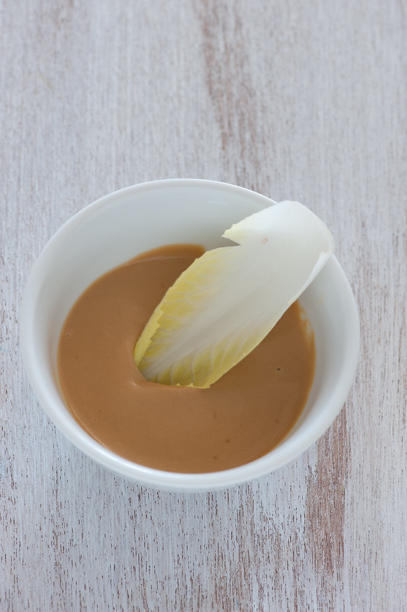

Japanese Salad Dressing
This Japanese salad dressing is a tangy and flavorful dressing that can be used on salads, vegetables, or as a dipping sauce. It is made with simple ingredients and is quick to prepare.
Ingredients
14 servings
- ½ cup minced onion
- ½ cup peanut oil
- ⅓ cup rice wine vinegar
- 2 tablespoons water
- 2 tablespoons minced fresh ginger root
- 2 tablespoons minced celery
- 2 tablespoons ketchup
- 4 teaspoons soy sauce
- 2 teaspoons white sugar
- 2 teaspoons lemon juice
- ½ teaspoon minced garlic
- ½ teaspoon salt
- ¼ teaspoon ground black pepper

Image credit: Jules
on Flickr
used under CC BY 2.0
Instructions
- Gather all ingredients.
- Combine minced onion, peanut oil, rice vinegar, water, ginger, celery, ketchup, soy sauce, sugar, lemon juice, garlic, salt, and pepper in a blender.
- Blend until all ingredients are well-pureed, about 30 seconds.
- Serve and enjoy!
Back to home page